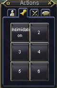
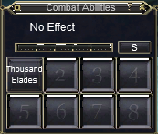
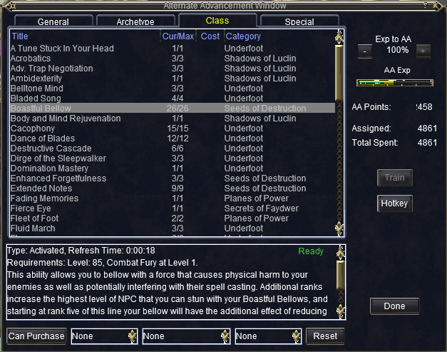

Introduction to Macroquest2
Required Materials:
Useful Materials:
Section Links:
Section 1: MQ2Melee
- ||
- ||
- ||
- ||
Section 1a: Introduction
MQ2Melee automation focuses mainly on two elements: holyshits and downshits.
Holyshits: These run when you are in combat.
Downshits: These run when you are out of combat.
However before we get to these, I want to make sure that you have a .ini file ready to edit. These files have a naming convention:
<Server Short Name>_<Character Name>.ini
Ex: Xais_Vixenary.iniYou can force MQ2Melee to make a .ini file by typing in '/melee save' and will be saved in your main MQ2 folder.
It will look something like this:
[MQ2Melee]
aggro = 1
bash = 1
disarm = 1
enrage = 1
facing = 1
feigndeath = 30
harmtouch = 0
infuriate = 1
kick = 1
melee = 1
petassist = 1
petrange = 75
plugin = 1
provoke1 = 1222
provokeend = 20
provokemax = 1
provokeonce = 1
resume = 75
stickrange = 75
taunt = 1
version = 6.020So now that we have a file to edit, let's start working on the holy/downshits. To enable them, we follow the same style as the other elements in the file:
downflag<0-63> = 1
holyflag<0-63> = 1Make sure that you enable the flag for the corresponding holy/downshit. Here is an example:
holyflag0 = 1
holyshit0 = /echo Hello SpamNote: This will probably create a lot of spam, so you probably won't want to enter combat with this still active.
The next part is probably the hardest because you have access to everything MQ2 can do. I'm going to try and cover some of the common uses and let you take it from there.
Section 1b: Abilities
What I mean by 'Abilities' is just the regular stuff like Kick, Frenzy, etc. I will let you know that MQ2Melee already has flags for most of this, but I want to show you how to do it yourself.
Another important note is that there aren't commands like /kick or /frenzy, so we have to compromise and use the Actions window to set our abilities up.
The commands to use the abilities here are '/doability<1-6>.' So if I wanted to use Intimidation, then I would type '/doability 1.'
And since we only want to use this during combat, we'll want to use a holyshit:
holyshit0 = /doability 1This is just part one complete though. The big problem with it now is that MQ2Melee will continuously try to use the ability even if it's on cooldown. We don't want that, so we need a way to tell it to only use the ability when it's ready. This involves using what's called an if-statement:
holyshit0 = /if (${Me.AbilityReady[Intimidation]} /doability 1)I won't get into the nitty-gritty details of what exactly happens here, but essentially this if-statement checks to see if Intimidation is ready to use. If it is, then it will use the ability and wait until it's off cooldown again.
Now what if we only want to use this ability when the mob is low on hp? Luckily, there are also ways to tell how much health your target has.
holyshit0 = /if (${Me.AbilityReady[initmidation]} && (${Target.PctHPs} <= 25)) /doability 1MQ2Melee will now only use the ability when it's ready and if the target is at, or below, 25% hp.
Section 1c: Combat Abilities
These are what people typically call Disciplines, or Discs.
The methodology behind these is very similar to what we just did. For my example, I'll be using the Thousand Blades disc:
/disc Thousand BladesThis is the command to actually use the disc, but typically we only want to use this when we're fighting a named:
holyshit1 = /if (${Me.CombatAbilityReady[Thousand Blades]} && ${Target.Name.Find[#]}) /disc Thousand BladesThe first part of this if-statement checks to see if the disc is ready to use, much like Intimidation. The second part checks to see if the mob has the '#' symbol in his name. This usually indicates a named mob.
Section 1d: Alt Abilities
These are just AAs. These follow essentially the same style as using the discs:
holyshit2 = /if (${Me.AltAbilityReady[Boastful Bellow]}) /casting "Boastful Bellow" altHopefully this looks pretty familiar. The if-statement checks to see if Boastful Bellow is ready. The command we use after is the new part.
The /casting command is a feature of the MQ2Cast plugin, and it is much more reliable than the native EQ commands to activate AAs. The 'alt' at the end tells MQ2Cast that what we're trying to cast is an alt abilitiy.
Section 1e: Items

The last aspect I'll focus on here is items. And they follow much the same style as we're used to:
holyshit3 = /if (${Cast.Ready[Avner`s Avenging Song]}) /casting "Avner`s Avenging Song" itemThe main difference here is that instead of looking at 'Me', we're using 'Cast.' This lets the MQ2Cast plugin check to see if the item is ready to cast.
If you want to see the full example, then I have it at the top of the page as a download link.
Note: If you're familiar with the /multiline command, then you can use it to string together a bunch of commands for using things like timers.
Section 2: Macros
This section could fill around 100 sections with all the different kinds of things you can do with macros, but for time sake, I’m going to keep it short and look at Xyph’s Autokill2 macro. You can find the macro at the top in the 'Required Materials' section.
I'll try to work you through the macro by splitting it into sections. To give a brief overview of what the macro does, it checks the zone for any mobs to kill, then makes sure it's not on the blackist, then starts warping to it and killing it. It does this until we manually end the macro with '/endmacro.'
|#event Backstab "You backstab #1# for #2# points of damage."This first line at the top references what we call events. Since Xyph actually commented out (denoted by the ' | ') the event, I won't explain it too much. Essentially what this event checks for is when you've backstabbed something.
sub mainIf you're familiar with programming, this is how we define where the macro starts. If you're not familiar with programming, this is where the magic happens.
/declare longKill timer
/declare curZone string
/declare notValid string
/declare npcID int
/declare i intThis is you might call the variable initiation section. In short terms, we're creating these variables (curZone, notValid, etc.) that are going to store information we want to remember throughout the macro. I'll explain what each does as we encounter it.
/varset notValid /Norrath`s Keepers Guard/Tatsujiro the Serene/Caridwi/Furious Sentry/The Butler/Velden Dragonbane/Vkjen Thunderslayer/King Tormax/The Avatar of War/a cursed pirate/a sea turtle/Jaques the Infected/a tortured sailor/Smoot/Gordish Frozenheart/Kessdona the Enlightened/Rikkukin the Defender/Gesh`kru/This looks really confusing at first, but I promise it's not. This is where we're "setting" notValid to hold a bunch of names. We use slashes in between each name so that we can easily tell the macro where each name starts and ends.
/varset curZone ${Zone}This line is very similar to the last one. But here we're using what's called a TLO (Top-Level Object) 'Zone' to give us the name of the zone we're in. Then we're storing that for later use.
:WaitForRespawnsThis is generally what every programmer wants to avoid using: a label. Unfortunately MQ2 doesn't come with native looping functionality other than the basic for-loop. So we can use this as a makeshift while-loop combined with an if-statement afterwards.
In general terms, this is how keep the macro going without exiting out early on us.
/if (${SpawnCount[npc]}>0) {We dealt with this earlier in the MQ2Melee section. It functions exactly the same way as it did before: we're using another TLO here to check the number of NPC spawns in the zone we're in.
We want to do this to make sure there's something to actually kill when we run the macro.
:NextSpawnThis is another label that we're using to cycle through each mob in the zone. Once we kill one, the macro will jump back up here and move onto the next.
/if (!${String[${Zone}].Equal[${curZone}]}) /returnThe if-statement here uses the variable we made before (curZone) to check against the zone we're currently in. If they don't match, then we want to stop the macro with '/return.'
/for i 1 to ${SpawnCount}This is the for-loop I mentioned earlier. What's happening here is that we get the number of NPCs in the zone, and then we run the killing part of the macro that many times.
For example: if there are 10 mobs in the zone, this loop will run 10 times (or more technically, count from 1 to 10).
/vardata npcID NearestSpawn[${i}].IDThis is how we're finding the ID for the mob we want to kill. The '${i}' is how we reference what number the loop is on, and this is what lets us go down the list.
/if ((${npcID}!=${Me.ID}) && (${Spawn[${npcID}].Type.Equal[NPC]})) {The if-statement here is a logic check: we don't want the macro to target ourselves for obvious reasons, and we want to make sure that our intended target is a NPC we can kill.
/if ((${notValid.Find[/${Spawn[${npcID}].CleanName}/]}==NULL) && (${Spawn[${npcID}].CleanName.Length}>0)) {It seems like Xyph split this check into two chunks to make it easier to understand. The purpose of this if-statement is to make sure our mob's name isn't on our blacklist and that its name is at least 1 character long.
The reason for checking this is because unkillable mobs typically have an empty name.
/target id ${npcID}This is a simple slash command that MQ2 has to target a NPC based on its ID. And we stored that ID in 'npcID' earlier before the two if-statement checks.
/if (!${longKill}) {
/call warpTarget 0
} else {
/call warpTarget 1
}We haven't quite gotten to the point where we set our timer 'longKill,' but if we haven't killed the mob in a certain period of time, then it most likely means we can't hit it. So we'll want to warp to him again.
We use this '/call warpTarget' function at the end of the macro to actually warp to the mob. The ' 0 ' or ' 1 ' tells the macro whether we need to give some distance between the mob and ourselves.
:Retarget
/target clear
/delay 5
/target id ${npcID}
/delay 1s ${Target.Distance}<10
/stick 7 moveback
/attack on
/varset longKill 8sThis section is where we start attacking the mob after we warp to it. The reason we clear our target at first is because EQ has a bug where you can't interact with a NPC you targeted from too far away. Then we stick to the mob and turn our attack on.
:WaitForDead
/face fast nolookWe're using this label here to tell the macro to wait until we kill the mob. The '/face fast nolook' command makes your character face the mob so you have a clear line of sight.
/doeventsThis command relates to the commented out event we saw earlier. This tells MQ2 to execute any events that have queued up. There's usually a 'sub' or function to go with each event, but since it was commented out in this macro, there isn't one to reference, so nothing happens.
/if (${String[${Me.Class}].Equal[Rogue]}) {
/if (${Me.AbilityReady[Backstab]}) /doability Backstab
/if (${String[${Me.Song[Thief's Eyes]}].Equal[NULL]}) /doability "Thief's Eyes"
}This is a specialized part of the macro that only occurs if you're a Rogue. In the case that you are, the macro will use your Backstab for you and then Thief's Eyes.
Hopefully this looks familiar from the MQ2Melee section.
/if (${String[${Me.Class}].Equal[Druid]}) {
/casting "Galatine"
/delay 4
}This is another specialized section that checks to see if you're a Druid. If so, then it will cast Galatine for you.
/if ((${Target.Type.Equal[CORPSE]}) || (!${longKill})) /target clearThis is the part of the macro that checks to see if we need to move on to the next mob. If the one we're currently fighting is dead or our fighting timer has run out, then clear the target and find the nearest mob.
/if (${Target.Distance}>50) /call warpTarget 0This is another check to make sure the mob hasn't warped or somehow gotten away from us. If it has, then we want to warp to it.
/if (${Target.ID}==${npcID}) /goto :WaitForDeadHere we want to make sure that we're not leaving the mob we're fighting alive. If our current target's ID matches the ID we saved at the beginning of the loop, then keep killing it.
The '/goto' command is how we navigate to labels directly.
/goto :NextSpawnThis macro doesn't use any conditional checks to go to the top of the macro, so this serves as a constant label jump so the macro keeps running until no mobs are alive.
/next iThis just increments the for-loop to go from one number to the next.
/delay 5s
/goto :WaitForRespawnsThis delay command here lets the macro sleep for a few seconds to try and wait for some mobs to repop. Once it's waited 5 seconds, it will go to the top of the macro and check for mobs again.
/returnThis is how we tell macros to close out, but since we want this macro to run until we manually stop it, the '/goto' command prevents the macro from reaching the return.
sub warpTarget(boolWithDistance)
/if (${boolWithDistance}) {
/warp loc ${Math.Calc[${Target.Y}-2]} ${Math.Calc[${Target.X}-2]} ${Target.Z}
} else {
/warp target
}
/returnThis is what some people might call a helper function (or in our case a helper sub). It's called this because we use it to separate some commands or calculations we do multiple times into one function we can easily call in the main part of the macro.
To explain what it does, it's looking for a ' 0 ' or a ' 1 ' indicating a 'no' or a 'yes.' With that, it will either warp you to the mob with a little distance in between you (if given 'yes') or warp you right on top of the mob (if given 'no').
Conclusion
So that's my small rundown of MQ2Melee and an example macro. Hopefully you're able to better understand the intent behind some of the decisions made when making MQ2Melee holy/downshits and the methodology behind the macro.
There's an extensive amount of TLOs you can use to pull in various amounts of information to make some really interesting macros. I'll probably cover some specific ones that are very helpful in most macros in a different tutorial.
There's a list of useful resources at the top of the page if you'd like to look at the wiki for the different TLOs or learn more.
If you have any questions, feel free to contact me!